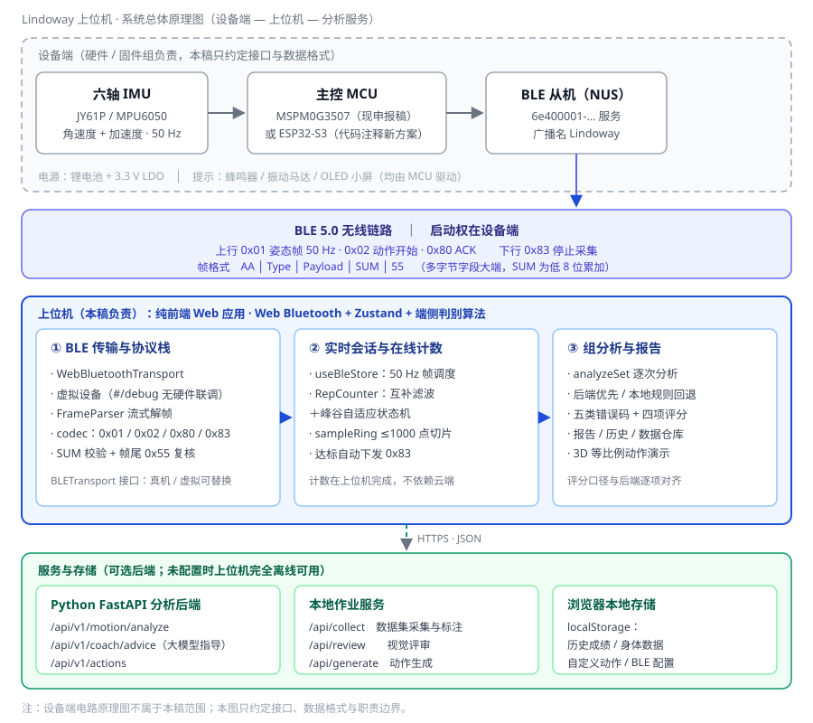
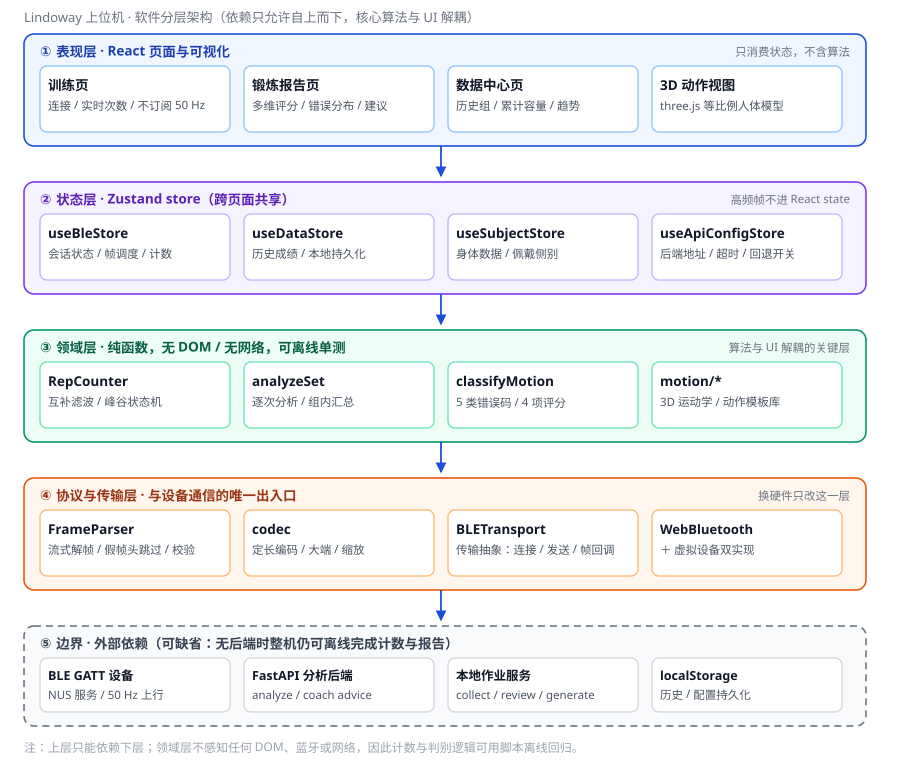
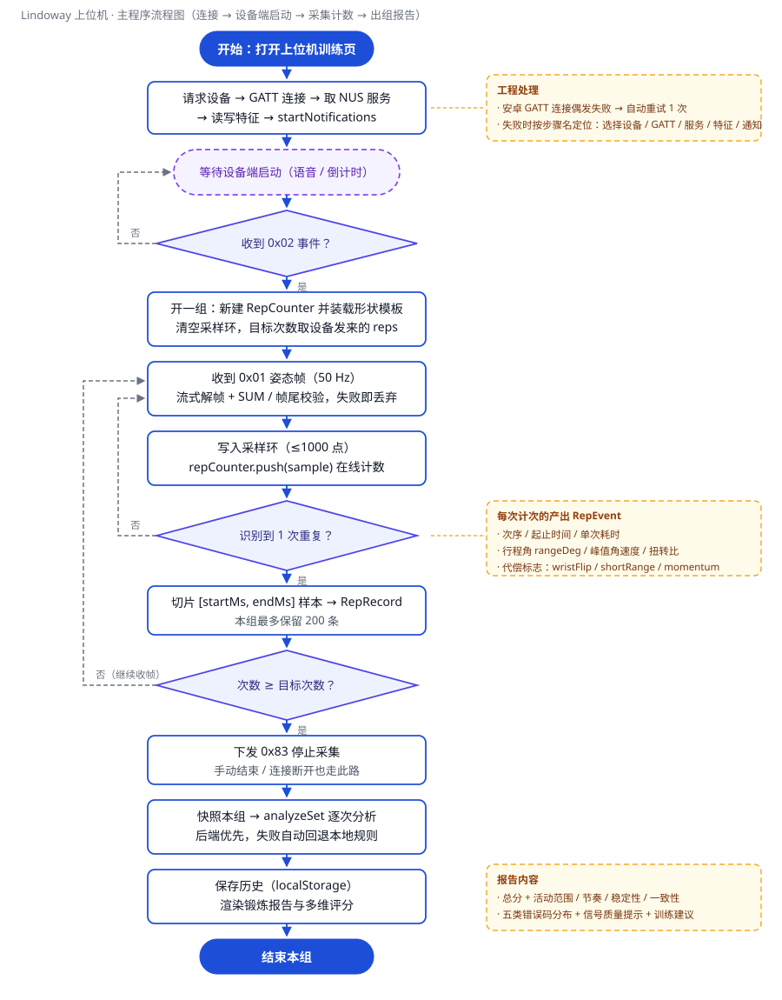
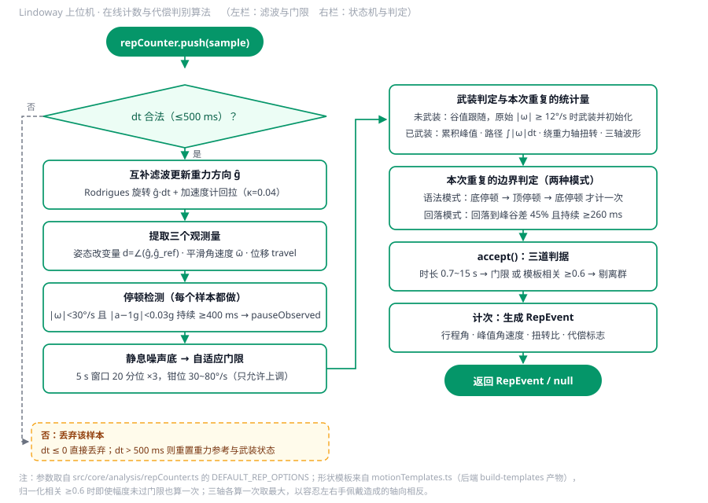
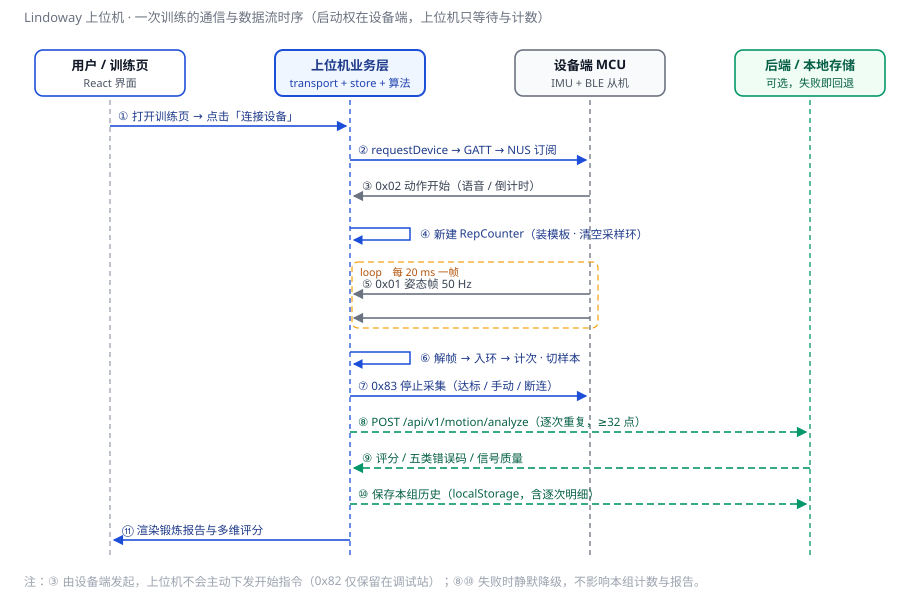

本稿只覆盖我负责的上位机部分，即仓库 D:\lindoway 中的纯前端 Web 应用：蓝牙通信与协议解析、在线计数与代偿判别、组内分析与锻炼报告生成。设备端的电路原理图、固件与结构件由其他成员负责，本稿只在接口层面引用，不展开。
资料来自两部分：一是《Lindoway 项目设计简介》（申报材料，lindoway.html）；二是仓库现有源码，重点核对 src/core/protocol/codec.ts、src/core/ble/*、src/core/analysis/*、src/store/useBleStore.ts 与 src/pages/*。凡本文给出具体数值的地方，均可在对应源文件中查到出处；凡属推测或尚未实测的地方，一律标注"待核"。
先给结论：上位机的功能闭环已经打通——连接、计数、出报告、存历史、数据采集五条链路都能跑通，且在没有真实硬件时可用内置虚拟设备完成全流程演示；当前缺口集中在真机联调数据与答辩素材，见第十节。
这个项目容易被误解的地方是"到底谁在算数"。实际上系统被切成三条职责清晰的链路，上位机在其中只承担中间一段：
· 设备端（边缘）：高频采样、姿态解算、动作是否变形的即时判别与就地报警。要求低延迟，因为警示必须在动作发生的那一刻给出。
· 上位机（本稿）：把 50 Hz 的姿态流变成可用的训练事实——数清做了几次、每次质量如何、这一组该怎么评价，并把它变成一份看得懂的报告。
· 分析后端（可选）：逐次动作的五类错误判定与评分、大模型训练建议。它是"增强项"而不是"必需项"，未配置时上位机必须能独立完成计数与报告。
由此确定三条贯穿全稿的设计取舍，后面所有模块都是为它们服务的：
· 启动权在设备端。用户在器械端用语音关键词或隐私倒计时开始，设备发 0x02 事件通知上位机；上位机不下发"开始"指令（0x82 仅保留在调试站）。这样训练者不需要腾出手来点手机，也避免了两端各自计时的不同步。
· 整段原始波形不进云端，计数在上位机完成。设备端只负责采样，把 50 Hz 六轴数据流经 BLE 上行；计数在上位机浏览器内实时完成，既不占用设备端算力，也不依赖网络。训练主链路只把"每一次重复"的切片（≥32 点）交给分析后端，不传整段波形；整段波形只在"数据采集 / 标注"模式下才上传到作业服务，用来标定计数参数、沉淀训练集——那是与训练并列的第二条链路，两者不要混为一谈。
· 分析可降级。后端不可达时自动回退到本地规则分析器，阈值与评分公式与后端逐项对齐，报告结构不变，只在结果上标注来源。
| 角色 | 输入 | 输出 | 本稿是否负责 |
|---|---|---|---|
| 设备端 MCU | IMU 六轴原始量 | 0x01 姿态帧（50 Hz）、0x02 动作开始、0x80 ACK | 否（只约定格式） |
| 上位机 | 上述帧 + 用户操作 | 本组报告、历史记录、采集标注数据 | 是 |
| 分析后端 | 单次重复的样本序列 | 评分、错误码、信号质量、教练建议 | 否（只对接接口） |
| 浏览器本地存储 | 上位机写入 | 历史成绩、身体数据、自定义动作、BLE 配置 | 是 |
如图 1，整个系统是"设备端—上位机—服务端"三段式。上位机对下通过 BLE GATT 与设备的 NUS 服务（6e400001-…）通信，读特征收帧、写特征发指令；对上通过 HTTPS/JSON 与可选的 FastAPI 后端通信；自身用 localStorage 承担历史与配置的持久化。
选择 Web 技术栈有三个现实理由。第一，免安装：答辩现场用笔记本或安卓手机的浏览器打开即可，不需要安装包、不需要签名、不需要应用商店；第二，Web Bluetooth 是浏览器原生能力，直接操作 GATT，不需要额外的原生桥接层；第三，桌面与移动端共用一套代码，改一处两端同时生效。代价是浏览器限制——必须是 HTTPS 或 localhost，且目前以安卓 Chrome/Edge 支持最完整，这一点在答辩设备选择上要提前确认。

代码按依赖方向分成五层（图 2）：表现层（React 页面与 3D 视图）、状态层（Zustand store）、领域层（纯函数算法）、协议与传输层（帧编解码与 BLE 抽象）、边界（设备、后端、本地存储）。上层只能依赖下层，这意味着换硬件只改协议层，换算法只改领域层，UI 不需要跟着动。
几个值得说明的决定：
· 传输层做成接口（BLETransport），真机实现（WebBluetoothTransport）与虚拟设备实现（VirtualDeviceTransport）可互换。虚拟设备按同一套协议模拟 50 Hz 姿态流、ACK 与事件帧，因此在没有硬件、或现场蓝牙故障时，整套演示仍可完整走一遍——这是答辩的兜底方案，也是日常开发不必等硬件的原因。
· 50 Hz 的帧不进 React state。姿态帧只更新 store 里的少量字段并驱动非 React 的计数逻辑，训练页本身不订阅高频数据，避免每 20 ms 触发一次整页重渲染。这是移动端流畅度的关键，也是把"实时视图"和"用户界面"拆成两套页面的原因。
· 领域层是纯函数，不碰 DOM、不碰蓝牙、不碰网络。计数与判别因此可以用脚本离线跑历史数据做回归，不必接硬件、不必开浏览器。本稿中的算法参数就是靠这种方式调出来的。

帧格式是定长的：AA | Type | Payload | SUM | 55，多字节字段一律大端，SUM 为帧头到载荷末尾的累加和取低 8 位。定长 + 双端标记让解析器可以在字节流中随时重新同步，不依赖"包边界"，这对 BLE 通知分包尤其重要。
解析器（FrameParser）按流式处理：在缓冲区里找帧头 0xAA，按类型查表得到载荷长度，长度不够就等下一批字节；未知类型只跳过 1 字节继续找头；校验和或帧尾不符则丢弃该候选帧。这样即使中途丢了整帧、或收到 WiFi 干扰造成的假帧头，也能在几帧之内自愈，不会把连接卡死。
字段一律用定点整数而不是浮点：角度 i16 缩放 100（分辨率 0.01°，量程 ±327°），角速度 i16 缩放 10（0.1 °/s，量程 ±3276 °/s），加速度 i16 缩放 1000（0.001 g）。三点好处：载荷定长，解析不需要分隔符；跨语言跨平台逐位一致，不会出现前后端对同一帧解释不同；累加校验对整数天然稳定，也不会因 NaN 把校验带偏。
固件版本不同时也不用改代码：服务与读写的 UUID 都放在网页端的配置项里（默认 NUS 三段），旧固件的 0xFFE0/0xFFE1 短 UUID 会被自动补全成 128 位标准格式再用于匹配。这一步看起来多余，实测却省掉了每次换模块都要重新编译前端的时间。
| 类型 | 方向 | 载荷 | 帧长 | 用途与字段 |
|---|---|---|---|---|
| 0x01 | 设备→上位机 | 22 B | 26 B | 姿态帧，50 Hz。时间戳 u32；roll/pitch/yaw 为 i16×100；加速度 i16×1000（g）；角速度 i16×10（°/s） |
| 0x02 | 设备→上位机 | 3 B | 7 B | 动作开始事件：actionId、启动方式（1 语音 / 2 倒计时）、本组目标次数 |
| 0x80 | 设备→上位机 | 1 B | 5 B | ACK，回显动作编号 |
| 0x82 | 上位机→设备 | 19 B | 23 B | 标准动作目标姿态（调试用途，正式流程不再下发） |
| 0x83 | 上位机→设备 | 0 B | 4 B | 停止采集；达标、手动结束、连接断开时下发 |

主流程见图 3，分三段：连接、采集、出报告。
连接段的工程处理比协议本身更费事。安卓上 gatt.connect() 偶发失败，因此实现里带一次 600 ms 后的自动重试；连接过程被拆成"选择设备 / GATT / 查找服务 / 查找特征 / 启动通知"几个具名步骤，失败时直接把卡在哪一步写进错误提示，并把设备实际提供的服务 UUID 列出来——否则现场只能看到一句"连接失败"，排查成本极高。
采集段每收到一帧姿态数据，先经协议层解帧校验，再写入长度上限 1000 点的采样环，同时喂给计数器。计次成功时，按该次重复的起止时间戳从采样环里切出对应样本，形成一条 RepRecord（本组最多保留 200 条）。当累计次数达到设备下发的目标次数时，自动下发 0x83 停止采集，并把"是否正在录制"一并收尾。
出报告段在结束本组时触发，不依赖用户去报告页手动点。这里有个容易漏掉的分支：如果用户在最后一次动作的回落途中就结束本组，那次动作还没走到"计次"就被截断——实现里在停止前先 flush() 结算半途中的一次，避免"最后一次凭空消失"。连接意外断开同样走这条路径，先把本组结算完再断开，不让这一组数据白丢。

这一节是上位机里真正有技术含量的部分。最初的做法是"录完一段再切段数数"（离线切段），实测把它当实时计数器用会出三个结构性问题：一是数字会跳变（整段重算导致已计次数回退）；二是系统性漏数（过近的两次动作被合并）；三是轻轻晃动也会加数（切段只有角速度一道门限，没有幅度判断）。因此计数器被重写为在线状态机，只依赖已经发生的样本，计数单调不回退。
计数标量。用互补滤波跟踪设备坐标系下的重力方向 ĝ（陀螺仪管短期、加速度计管长期），维护一个"静止参考" ĝ_ref，计数标量取二者夹角 d。实测单次侧平举 d 约 69~79°，而单轴陀螺仪积分只有 30~36°——直接积分会低估一半以上，主轴还会跳。参考方向只在明显静止时缓慢跟随，肢体一旦离开静止就冻结，否则慢速动作时参考会跟着一起走，姿态改变量永远长不起来。
边界判定。一次重复 = 从谷底升到峰值、再回落到峰谷差的一定比例以下；阈值全部相对本组实际幅度，所以连续做、不完整放回也能数，轻轻晃动则因为峰谷差永远到不了下限而一次都不计。更强的做法是利用"停顿"这一离散事件：现场确认坐姿推举在顶端和底端各有 0.4~0.6 s 停顿，于是把边界锚在停顿上——底停顿 → 上举 → 顶停顿 → 下放 → 底停顿，在第二个底停顿时计一次。停顿比"回落到 45%"这种连续量稳定得多，也顺手根治了"下放半程被算成第二次"。
第二判据。非标准动作常常幅度不达标、但波形形状仍与标准动作高度相似。计数器因此保留一条模板相关通道：把本次三轴波形归一化后与标准模板求相关系数，任一轴超过 0.6 也算一次。取三轴最大、并取绝对值，是为了容忍左右手佩戴造成的轴向相反。这样"幅度门限没过但动作确实做了"的样本不会被误杀。
自适应门限。不同人的静息抖动差别很大：手稳的人静息 5°/s，手抖的人能到 15°/s，而"轻轻晃动"和"小幅度动作"在绝对角速度上完全重叠（实测都在 28°/s 上下），一个全局常数不可能同时滤掉晃动和数出小动作。实现改为用最近 5 s 窗口的 20 分位估计静息水平，门限取其 3 倍并钳位在 30~80°/s——只允许上调、不允许下调，因为下调会让晃动被数成动作。
| 参数 | 取值 | 作用 |
|---|---|---|
| signal | gyro | 计数标量用平滑角速度模长；gravity 适合整肢在垂直面翻转的动作 |
| omegaTauMs | 250 ms | 角速度低通，抑制顶点处角速度回落被误判为一次结束 |
| armOmegaDps | 12 °/s | 候选武装门限，用原始值而非平滑值，避免短促爆发被削掉 |
| omegaGateFloor / Max | 30 / 80 °/s | 自适应门限的钳位区间，只允许上调应对手抖 |
| fallFrac / fallHoldMs | 0.45 / 260 ms | 回落判据的深度与持续时间（未观察到停顿时生效） |
| fallTiltRatio / fallTravelRatio | 0.45 / 0.45 | 回落时姿态与竖直位移也要真的下来，区分"顶点停顿"与"底部休息" |
| minRepMs / maxRepMs | 700 / 15000 ms | 单次时长合法区间，过短过长都丢弃 |
| pauseMinMs | 400 ms | 连续静止多久算"真停顿"，停顿判据据此启用 |
| twistRatioLimit | 0.25 | 绕重力轴扭转占转动路径的比例，超过判为腕部翻转代偿 |
| templateMinCorr | 0.6 | 模板形状相关门限，作为幅度门限之外的第二判据 |
第七节描述的是早期设计。经过真机联调后，坐姿推举的计数换成了一套完全不同的模型。原因是实测发现传感器装在哑铃上：做推举时手柄始终接近水平、只做竖直平移，陀螺仪几乎没有信号（姿态改变量 d 中位仅 4.6°），所以依赖"角速度回落 + 姿态回落"的旧判据在推举上必然失效。
半计数模型。一次重复必然有两个停顿（顶端一个、底端一个），因此把每个明显停顿记为 0.5 次，攒满两个即 1 次。好处是完全不需要判断某个停顿是顶端还是底端——而这正是之前所有缺陷的共同来源：相位错位会导致系统性在顶端计数；靠加速度二次积分判位则因漂移（2 秒内 0.01g 零偏即可造成约 0.2 米误差，与真实行程 0.35 米同量级）而符号随机。
静止判据改为相对量。绝对门槛不可能同时适配快慢：实测慢速组角速度中位数仅 12.3°/s，若把静止定为 |ω| < 20°/s，则一半以上的运动时间都会被判成停顿；快速组门槛又偏松。因此改为 |ω| < max(下限, 比例 × 动作强度)，动作强度取最近 4 秒的第 90 分位，同一个比例对快慢都成立。
三道守卫。其一，两次停顿之间必须真的动过（峰值角速度达到本组动作强度的 moveRatio 倍），排除首尾静止保持期间手部小幅移动造成的虚假停顿；其二，两次停顿间隔不得小于 halfCycleMinMs，排除原地反复停；其三，武装之前就已在进行的那次停顿不计入。
用真实录音定标。取 12 次标准坐姿推举整组录音（2794 帧 / 55.9 秒 / 50 Hz）反解参数：实测 |ω| 的 p50 为 12.3、p90 为 26.3、最大 72.4 °/s；|a_vert| 的 p50 为 0.03、p90 为 0.09。12 次对应 24 个停顿，据此对 240 组参数组合做网格搜索，其中 53 组都能数出 12，说明算法本身正确，参数此前只是落在了稳健区间之外。
| 参数 | 取值 | 依据 |
|---|---|---|
| 模型 | 每个停顿计 0.5 次 | 一次重复必有两个停顿，无需判断顶/底 |
| 动作强度 | 最近 4 s 的 p90 | p70 会被停顿样本拉低，使门槛贴着动作中段 |
| pauseQuietRatio | 0.3 | 静止门槛 = max(下限, 0.3 × 动作强度) |
| pauseOmegaFloor | 10 °/s | 低于实测 |ω| 中位 12.3，否则一半运动时间被误判为静止 |
| pauseAccelFloor | 0.05 g | 实测 |a_vert| p50 为 0.03 |
| pauseMinMs / pauseQuietFrac | 300 ms / 0.7 | 窗口内安静样本占比达 0.7 即确认停顿 |
| moveRatio | 0.7 | 两次停顿之间须达到本组动作强度的 0.7 倍，排除静止期小动作 |
| halfCycleMinMs | 350 ms | 两次停顿的最短间隔 |
实测结果与已知边界。真实 12 次录音数出 12；同步进行的合成回归（次数 1/3/5/12/20、停顿 400/500/600 ms、节律快慢、行程大小、噪声、静止与晃动）全部通过，静止与晃动均为 0 次。未解决的一项：快速节奏（44.6 秒 11.5 次）的录音只数出 9 次，原因是快速时两端停顿更短、可能低于 300 ms 的确认窗口；需一份"快速但停顿明确"的数据，把"节奏快"与"停顿短"两个因素分离后才能定位。
参数按动作分离。站姿侧平举不套用停顿模型——它的哑铃确实在转（陀螺仪峰值中位 150°/s），姿态判据 d 正常工作，沿用"角速度回落 + 姿态回落"即可（离线 96.6%）。两套参数由 repOptionsFor(actionId) 分别给出，requirePause 默认为 false，只有坐姿推举显式开启，因此改动不会波及其它动作。
一组结束后，上位机把这一组里每一次重复的样本切片逐条送去分析，再汇总成 SetAnalysis：可用次数、平均总分、四项子分（活动范围、节奏、稳定性、一致性）、五类错误码的计数与严重度、信号质量问题清单，以及是否存在高风险。
| 错误码 | 含义 | 严重度 | 触发条件（摘要） |
|---|---|---|---|
| INSUFFICIENT_RANGE | 活动范围不足 | 中 | 主轴峰值角速度低于该动作的 min_peak（推举 38、侧平举 34 °/s） |
| TEMPO_TOO_FAST | 动作过快 | 中 | 单次时长 < 1000 ms |
| TEMPO_TOO_SLOW | 动作过慢 | 低 | 单次时长 > 5000 ms |
| UNSTABLE_MOTION | 轨迹不稳 | 中 | 主轴相对正弦参考的残差标准差 > 7.0 |
| INCOMPLETE_REPETITION | 未完整完成 | 高 | 时长 < 1000 ms，或结束点角速度 > min_peak × 0.35 |
评分口径与后端逐项一致：活动范围按峰值与门限的比值给分，节奏在 1000~5000 ms 区间满分、偏离越远扣得越多，稳定性按残差标准差线性扣分，一致性按命中的错误条数扣分，四项加权后再取总分。命中高风险错误（未完整完成）时，总分被强制压到 45 分以下，并通过前端的安全覆盖把建议锁定为"降低负荷、建议停止"——这一层在前端又兜了一遍，避免后端没配好时提示反而变宽松。
后端可用时优先后端结果；不可用则回退本地规则分析，报告结构、字段、评分完全一致，只在结果里标注数据来源。信号质量不合格的那一次不产生任何动作错误（只计入"不可用"），提示用户重新佩戴后重采，而不是显示"动作有问题"——这条与后端的硬性约束一致。
图 5 把一次完整训练的消息顺序摊开。有两点值得在汇报时强调：其一，第 ③ 步由设备端发起，上位机全程只等待与计数，这就是"启动权在设备端"的具体体现；其二，第 ⑧⑩ 步是可选路径，失败时静默降级，不影响本组的计数、评分与报告——上位机在无网络、无后端的环境下依然是完整可用的。

已完成：连接与协议解析（含虚拟设备）、在线计数状态机（含模板相关与自适应门限）、组内分析与本地规则回退、报告页与数据中心、数据采集与人工标注上传、动作库与自定义动作、3D 等比例动作演示。
已有实测数据（来自本地诊断脚本对历史样本的回放，非答辩现场数据）：单次识别率经参数调整后由坐姿推举 26.6% 提升到 67.3%、站姿侧平举 70.8% 提升到 86.2%；晃动样本的误计在启用自适应门限后由 9 次降到 0。这些数字需要在真机上复核后才能写进正式稿，本稿暂作过程记录。
| 事项 | 归属 | 完成标准 |
|---|---|---|
| 统一硬件口径：申报材料写 MSPM0G3507，代码注释写 ESP32-S3 | 全组 | 确定最终主控与无线方案，图 1 对应改一处 |
| 真机 50 Hz 联调：丢包率、时间戳抖动、连续组计数准确率 | 上位机 + 固件 | 连续 3 组 × 10 次，计数误差 0，报告无缺项 |
| 计数参数按真机数据再标定一轮 | 上位机 | 两类动作单次识别率均 ≥ 90%（现场样本） |
| 报告页导出（PDF/图片）与分享 | 上位机 | 一键导出，含图与错误明细 |
| 答辩演示脚本：虚拟设备兜底流程、断连演示、后端降级演示 | 上位机 | 断网状态下 3 分钟内完整演示一遍 |
| 界面截图与录屏（申报材料"演示视频"要求） | 全组 | 按提交要求的分辨率与时长 |
| 采集数据的隐私与授权说明 | 全组 | 在采集页与申报材料中给出说明 |
上位机这一部分做的事情可以概括成三句：把不可靠的无线数据流变成可靠的计数事实（浏览器内状态机 + 双判据 + 自适应门限）；把一次训练变成一份能看懂的报告（逐次分析 + 组内汇总 + 后端可降级）；把整条链路做成可演示、可离线、可回退的形态（虚拟设备 + 本地存储 + 后端可选）。
本稿是初稿，第五节至第七节的技术细节建议在组内评审时重点核对一次，尤其是表 3 的参数取值与表 5 的第一条硬件口径——这两处一旦定稿，图 1 与正文表述都要跟着同步。
附：本稿所有插图均为矢量源文件（report/figures/*.svg），同名 PNG 为 2 倍分辨率导出，可直接插入其他文档或替换配色。